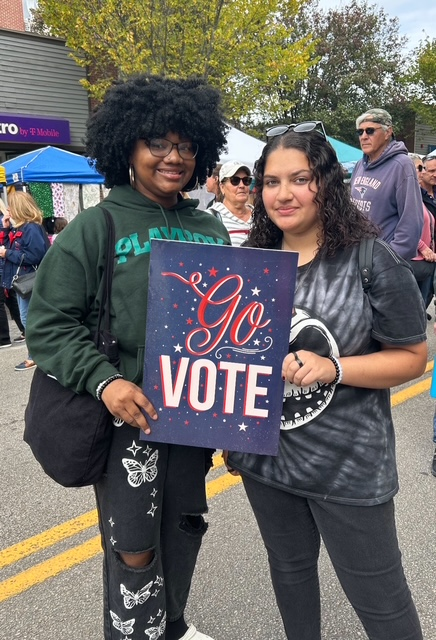
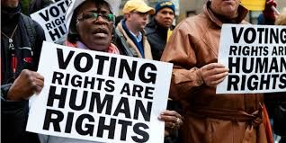
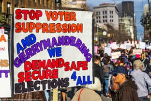

⚠️ Urgent — The SAVE Act
The SAVE Act could still become law — fast. The House attached the full SAVE America Act to the must-pass defense bill (NDAA), and its provisions are being considered for a budget package that needs only a simple majority in the Senate. As written, it takes effect the moment it passes — even weeks before Election Day. Learn what's at stake and help the League fight back.
The League of Women Voters of Newport County is a nonpartisan organization whose mission is to empower voters and defend democracy. Our work envisions a democracy where every person who has the right and knowledge can vote unimpeded, with confidence in the integrity of the voting process in each of the 6 towns in Newport County.
Newport County · Rhode Island
Through the dedication of our volunteers and members, we're making democracy stronger in Newport County.
Democracy thrives when every eligible citizen can vote and participate in government. The League of Women Voters has been defending voting rights and promoting civic engagement for over 100 years.
In Newport County, we work year-round to ensure that every voice is heard and every vote counts. From registering first-time voters to hosting nonpartisan candidate forums, we empower our community to make informed decisions at the ballot box.

Registering voters at community events throughout Newport County

Advocating for accessible, secure elections for all eligible voters

Building awareness and fighting for fair, safe, and secure elections
Making a difference is easier than you think. Here's how to join us:
Join the League for $75/year (individual) or $100/year (household). Membership includes our newsletter, event invitations, and voting rights in League decisions.
Help register voters, organize events, or observe local government meetings. We offer flexible opportunities that fit your schedule—from 2-5 hours per month.
Subscribe to our monthly newsletter, attend our quarterly meetings, and follow us on Facebook to stay connected with League activities and advocacy efforts.
Join fellow citizens across Newport County working to strengthen democracy and empower voters. Together, we can make a difference.
Join the League Today